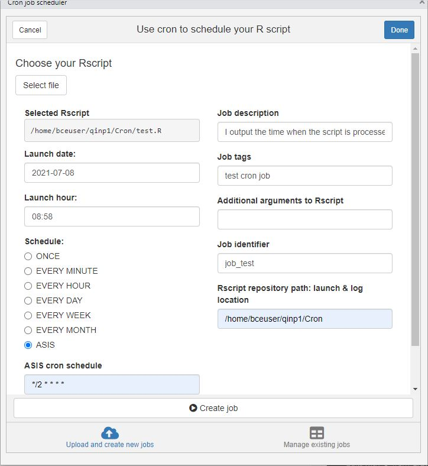
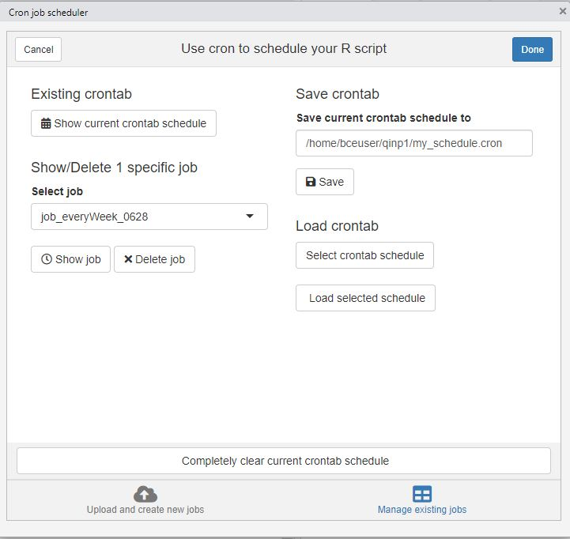

2 packages are distributed on CRAN by BNOSAC and they allow R users to automate R processes on specific timepoints from R itself.
- One package for scheduling R scripts and processes on Windows (taskscheduleR) and
- Another package for scheduling R scripts and processes on Unix/Linux(cronR)
This blog only covers cronR on Linux/Unix system. To make it easy for beginning R users, an Rstudio addin was developed. The RStudio addin basically allows you to select an R script and schedule it at specific timepoints. It does this by copying the script to your launch/log folder and setting up a cronjob for that script. Next we’ll see how to install and use this addin.
Installation
The package is on CRAN. To install, just run
install.packages('cronR')
To add Rstudio addin, also install miniUI, shiny and shinyFiles
install.packages('miniUI')
install.packages('shiny')
install.packages('shinyFiles')
RStudio addin
Just click Addins > Schedule R scripts on Linux/Unix in the top bar, then the Cron job scheduler pops up.

- Select file: choose the R script you want to automate, then the entire path would be copied to Selected Rscript
- Launch date and Launch hour: when will the cronjob be executed for the first time, the default value is the current time in Central European Summer Time (CEST)
- Schedule: how often will the cronjob be executed, if the predefined frequency is not applicable, check ASIS to customize the frequency for your cronjob
- ASIS cron schedule: use cron schedule expression to customize your cronjob frequency, the syntax and example can be found here
- Job description: a short description of the job and its purpose
- Job tags: optional; a set of tags, used for easy listing and retrieval of cron jobs
- Additional arguments to Rscript: optional; provide the inputs to the Rscripts if needed
- Job identifier: an identification to give the cronjob task for easier revision in the future
After creating the job, you can manage existing jobs in the addin as well.

- Show current crontab schedule would display all existing cronjob schedules, it doesn’t matter whether they are saved to crontab or not, except when Load selected schedule, only saved cronjobs in the crontab would be displayed.
- To check one specific job in the current schedule, you can Select job by Job identifier to Show job or Delete job explicitly.
- Save Crontab enables you to save all current cronjob schedules to a .cron file, then you can load this cron file by Select crontab schedule and Load selected schedule.
Note: If a cronjob is scheduled but not saved in crontab, after loading another selected schedule, the unsaved cronjob would be deleted automatically. So I would recommend always saving your cronjob to crontab schedule explicitly.